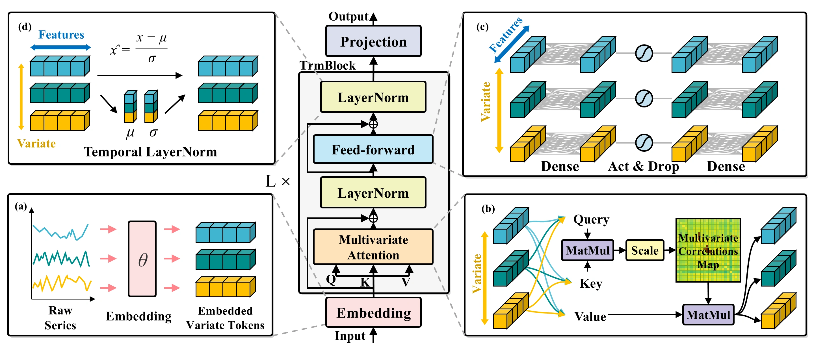
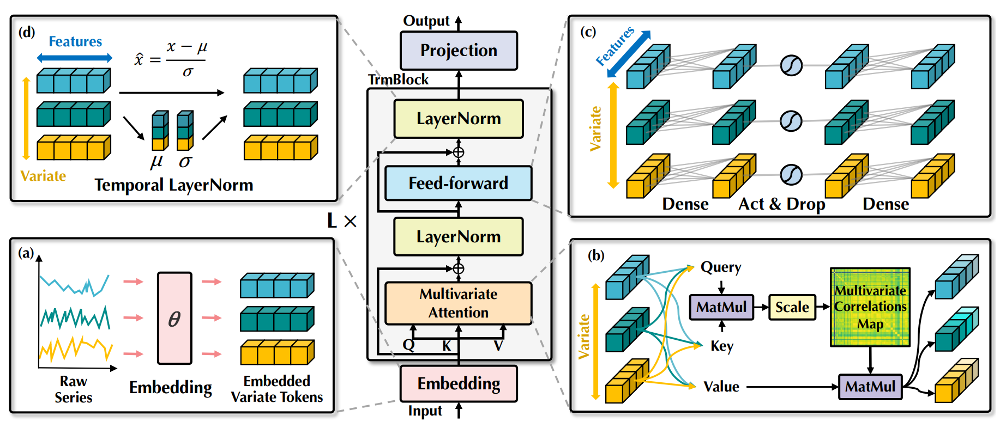
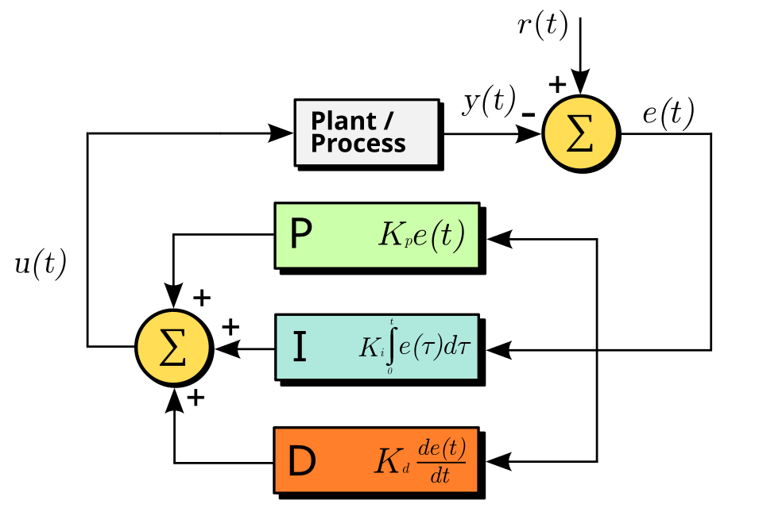

文字可直接修改
选中标签即可改字。简单上下标可由原生文字保留。MathType 公式需要相应的本机集成。
MADE FOR THE NEXT EDIT.v1.3.0
把科研插图重建成可编辑对象
在 PowerPoint 或 Visio 里改文字、调曲线、移动节点。拖动示意中的绿色节点，查看原生连接怎样跟随。
拖动绿色节点，或点按钮移动。
SEE IT WORK
拖动分界线，核对四个细节面板的文字、曲线和连接位置。PPTX 与 VSDX 示例可直接打开编辑。


参考图对应 Liu et al., ICLR 2024, Fig. 4. iTransformer: Inverted Transformers Are Effective for Time Series Forecasting ↗
拖动分界线，核对比例、积分和微分支路，再沿回路检查输出如何反馈到误差计算处。

PID en updated feedback.svg ↗，TravTigerEE 基于 Arturo Urquizo 的原图修订。FigTrans 将其重建为可编辑的 PPTX，参考图及重建图按 CC BY-SA 3.0 提供。
在 PowerPoint 中移动分组后的被控过程模块，查看箭头和进出连线是否跟随。
PPTX 源文件NATIVE FILES
从结构检查发现的问题回到源文件，在目标软件里保存、重开并核对改动。
选中标签即可改字。简单上下标可由原生文字保留。MathType 公式需要相应的本机集成。
需要跟随节点的线使用原生附着。标引和装饰线可保留固定走线。
使用原生路径重建曲线和网格。照片或独立插画可以作为单个图像保留。
DOWNLOAD
解压后，让 Codex 读取 senior-figtrans/SKILL.md。提供参考图，并指定 PowerPoint、Visio 或两者。
Codex 建议 多面板图或公式密集图，优先选择 Sol，推理强度设为 Ultra（选择器提供时）。
下载 v1.3.0senior-figtrans 放到 Codex 技能目录。使用 $senior-figtrans，把这张参考图重建为可编辑的 PPTX 和 VSDX，保留原图版式。